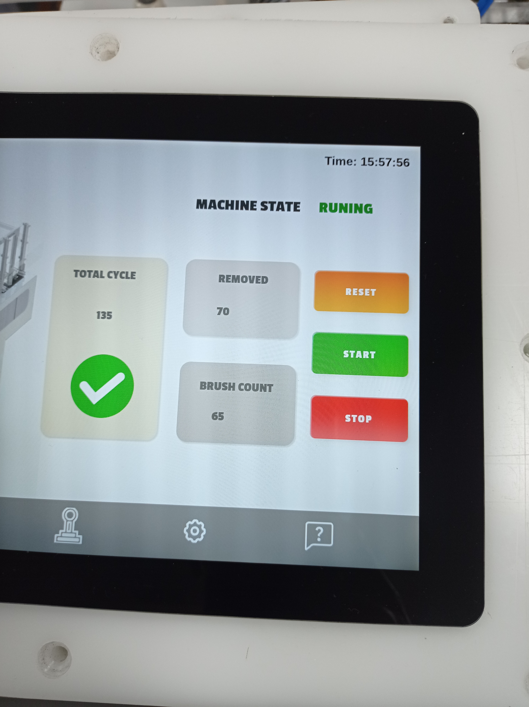

High-speed automation system with dual-core motion control, machine vision inspection, and Raspberry Pi web-based HMI

This project focused on developing a high-speed toothbrush packing machine with precise motion control, machine vision-based automation, and a modern web-based HMI for real-time monitoring and operation. The control system was built around the Arduino Portenta H7 (STM32H747), leveraging its dual-core architecture to separate time-critical motion tasks from higher-level coordination and I/O handling.
To improve performance and stability, the AccelStepper library was customized for Portenta H7 compatibility, and tailored control algorithms were implemented to reach a consistent cycle time of 3.2 seconds. The system also integrated a HIKROBOT SC3000 series camera to enhance automation accuracy, supported by a Raspberry Pi web-based HMI to streamline operator interaction and visibility.
Programmed the Arduino Portenta H7 (STM32H747) to leverage the dual-core architecture for deterministic real-time performance and robust system coordination.
Customized the AccelStepper library for seamless compatibility with the Portenta H7, enabling smoother and more precise motor control for high-speed operation.
Developed and implemented efficient control logic to minimize idle time and improve sequencing throughput, achieving a 3.2 second cycle time.
Integrated advanced vision capabilities using a HIKROBOT SC3000 series camera to improve automation accuracy and reduce manual intervention.
Designed and deployed a web-based Human-Machine Interface (HMI) running on a Raspberry Pi for real-time monitoring, diagnostics, and machine control.
Achieved a high-throughput packing cycle by optimizing motion sequencing, control logic, and timing-critical routines.
Modified the motion-control library for stable, precise operation on STM32H747, improving step accuracy and reliability.
Integrated HIKROBOT SC3000 vision functionality to strengthen automation accuracy and support consistent packing quality.
Delivered a Raspberry Pi web-based HMI enabling real-time monitoring, control, and faster troubleshooting for operators.